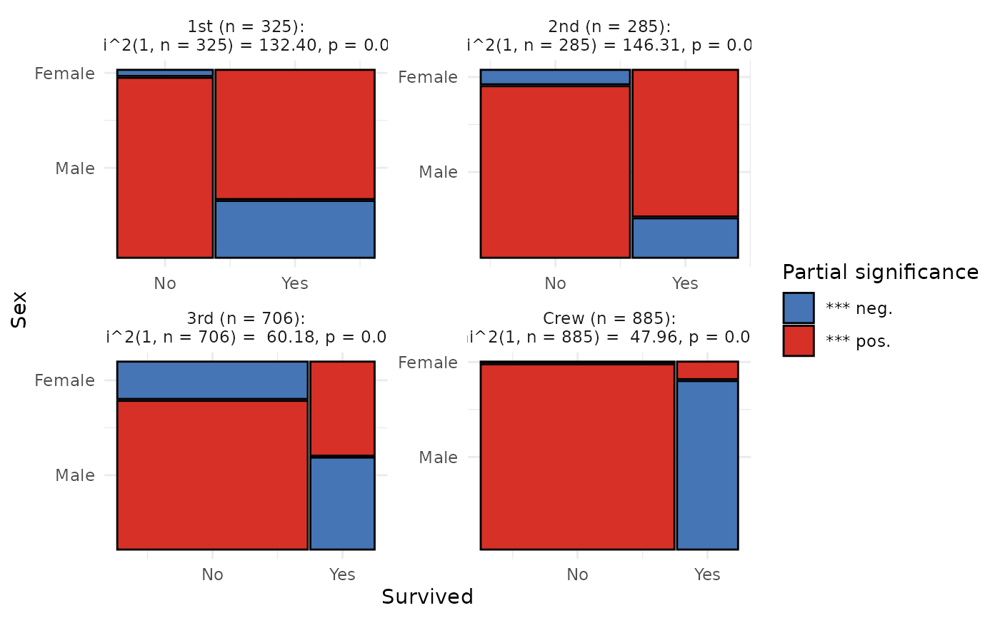

The mosaic() function generates imbalance plots for
contingency tables with up to three variables. Frequencies in the
contingency table are represented as tiles (rectangles), with each tile's
size proportional to the frequency of the corresponding group within the
entire dataset. The x-axis scale remains fixed across mosaic plots,
enabling straightforward comparisons of imbalance across treatment groups.
Usage
mosaic(
data = NULL,
y = NULL,
group = NULL,
facet = NULL,
ncol = 1,
group_counts = FALSE,
group_counts_size = 4,
significance = FALSE,
plot_name = NULL,
overwrite = FALSE,
...
)Arguments
- data
A non-empty
data.framecontaining at least one numeric column, as specified by theyargument. This argument must be provided and does not have a default value.- y
A single string or unquoted symbol representing the name of a numeric column in the
data. In the vector matching workflow, it is typically a numeric covariate that requires balancing.- group
A single string or unquoted symbol representing the name of a factor or character column in
data. Inraincloud()plots, the groups specified bygroupargument will be distinguished by separatefillandcoloraesthetics. For clarity, it is recommended to plot fewer than 10 groups, though there is no formal limit.- facet
A single string or unquoted symbol representing the name of a variable in
datato facet by. This argument is used in a call toggplot2::facet_wrap(), creating separate distribution plots for each unique group in thefacetvariable.- ncol
A single integer giving the number of columns in the facet layout. When
facetis notNULL,ncolmust be between 1 and the number of unique categories in thefacetvariable; values outside this range result in an error. This argument is ignored whenfacetisNULL.- group_counts
A logical flag. If
TRUE, the sizes of the groups will be displayed inside the rectangles in the plot created by themosaic()function. IfFALSE(default), the group sizes will not be shown.- group_counts_size
A single numeric value that specifies the size of the group count labels in millimeters ('mm'). This value is passed to the
sizeargument ofggplot2::geom_text().- significance
A logical flag; defaults to
FALSE. WhenTRUE, a Chi-squared test of independence is performed on the contingency table ofyandgroup. Note thatgroupmust be specified for the test to be calculated. Iffacetis provided, the significance is assessed separately for eachfacetsubgroup. Additionally, the function calculates standardized Pearson residuals (differences between observed and expected counts) and fills mosaic plot cells based on the level of partial significance for each cell.- plot_name
A string specifying a valid file name or path for the plot. If set to
NULL, the plot is displayed to the current graphical device but not saved locally. If a valid name with.pngor.pdfextension is provided, the plot is saved locally. Users can also include a subdirectory inplot_name. Ensure the file path follows the correct syntax for your operating system.- overwrite
A logical flag (default
FALSE) that is evaluated only if thesave.nameargument is provided. IfTRUE, the function checks whether a plot with the same name already exists. If it does, the existing plot will be overwritten. IfFALSEand a plot with the same name exists, an error is thrown. If no such plot exists, the plot is saved normally.- ...
Additional arguments to pass to
rstatix::chisq_testwhensignificance = TRUE.
Value
A ggplot object representing the contingency table of y and
group as a mosaic plot, optionally grouped by facet if specified.
Examples
## Example: Creating a Mosaic Plot of the Titanic Dataset
## This plot visualizes survival rates by gender across different passenger
## classes. By setting `significance = TRUE`, you can highlight statistically
## significant differences within each rectangle of the mosaic plot.
library(ggplot2)
# Load Titanic dataset and convert to data frame
titanic_df <- as.data.frame(Titanic)
# Expand the dataset by repeating rows according to 'Freq'
titanic_long <- titanic_df[rep(
seq_len(nrow(titanic_df)),
titanic_df$Freq
), ]
# Remove the 'Freq' column as it is no longer needed
titanic_long$Freq <- NULL
# Plot the data using mosaic() and modify the result using additional ggplot2
# functions
p <- mosaic(
data = titanic_long,
y = Survived,
group = Sex,
facet = Class,
ncol = 2,
significance = TRUE,
plot_name = NULL
)
p <- p +
theme_minimal()
p
